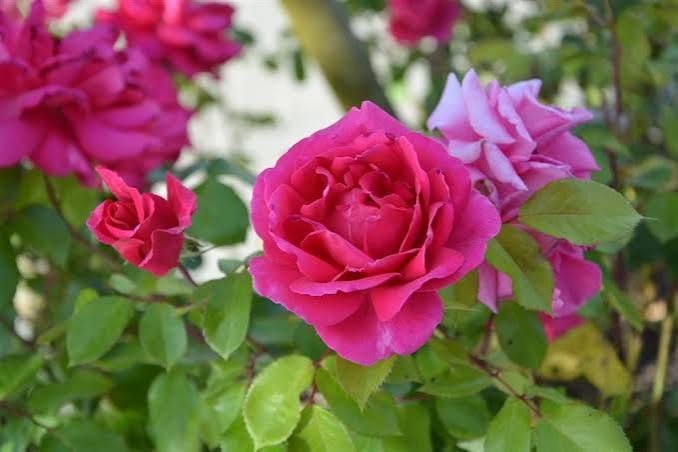
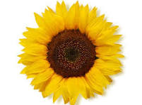

Potus

Planta resistente y facil de cuidar, ideal para interiores con buena iluminacion.
+ InfoUn espacio dedicado al cuidado y conocimiento de diferentes tipos de plantas.
Ver plantasConoce algunas de las plantas que pueden formar parte de tu hogar o de tu jardin.

Planta aromatica que necesita buena cantidad de luz solar y un suelo bien drenado.
+ Info
Planta ornamental que produce flores y necesita varias horas de luz solar.
+ Info
Planta conocida por sus grandes flores amarillas y su necesidad de abundante luz solar.
+ InfoEste sitio fue creado como un espacio para compartir informacion sobre plantas y sus cuidados.
Me interesa aprender sobre jardineria y conocer las caracteristicas de diferentes especies.
Si queres comunicarte conmigo, podes completar el siguiente formulario.